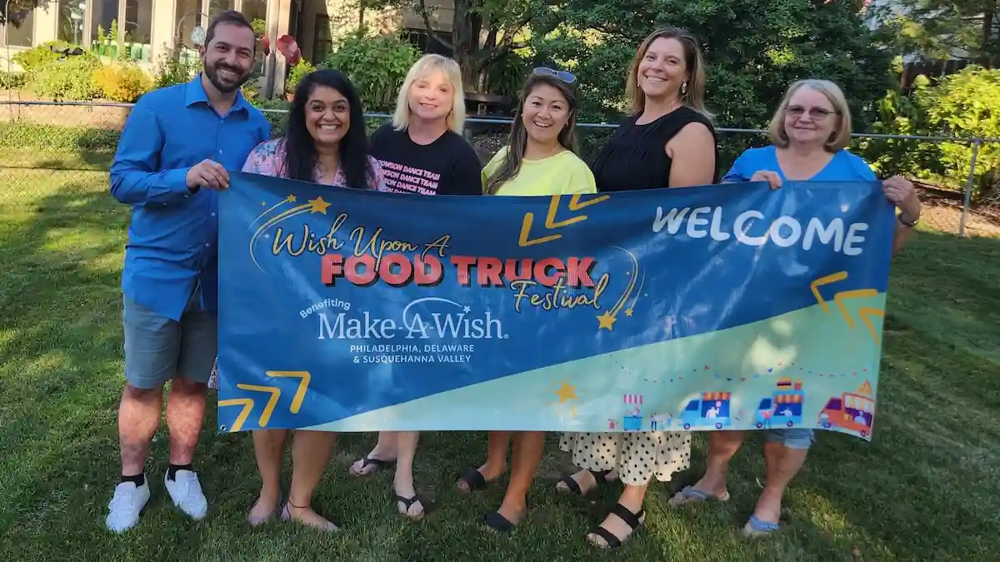
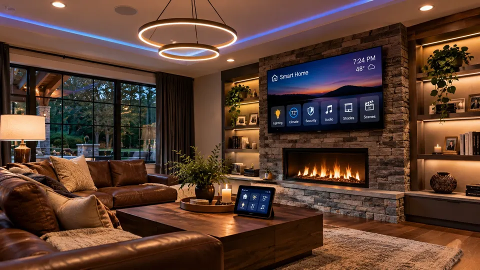

Enola, Pennsylvania
Andrew Guasch.
I’ve been a business owner since 2014. Today I run Authentic Dynamics in Central Pennsylvania. I build websites and tools that other small-business owners can understand, use, and own.
The work · George’s Oasis
How many are coming for lunch?
A group can bring twenty people to the restaurant and only twelve to the mini golf course. As a former store owner, I care about what happens on the other side of a form. That’s why we ask George’s Oasis customers for both numbers.
Inside this buildDecisions from the build
George’s OasisWhat did we change?
The group inquiry asks how many people are attending and how many will golf. The staff get enough detail to talk through the outing with the organizer.
What did we keep?
FoodBooking and Grubhub. I wanted the restaurant to get a better website and keep the ordering services its customers already knew.
Can I see it for myself?

Outside the shop
“Stronger communities mean stronger lives.”
Helping with a food truck festival and showing up at the polls are two ways I take part. In 2025, I ran as an independent write-in for minority inspector of elections in Hampden 11. I won a four-year term.
The story behind the write-inMy ambitions for AI
Make the first version affordable.
I want a small shop to be able to try an idea while it’s still fresh. AI can help me build the first version quickly. The person who knows the business gets to decide what feels right.
Try the room we built for My Smarter Home Services. Dim the lights, change the scene, and decide for yourself what makes it feel like home.
Explore my games, instruments and web apps
Step inside the smart room